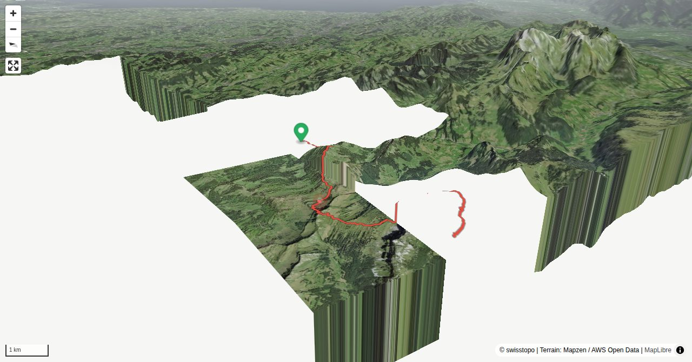

The bench on the concrete platform on top of Speer is very comfortable. At first the solid handrail of the platform may seem rather overdone, but the view down to Toggenburg from the exposed platform can indeed cause dizziness. If you ascend on the itinerary along the north ridge described here, which is equipped with steel cables, you have time to get used to being exposed. With some luck you may see ibex, stoically watching you ascend. The information boards of the geology trail on the summit tell you that the geology of Speer is something special. The conglomerate rock called Nagelfluh (small stones embedded in sandstone), normally a feature of the Mittelland, reaches up to a record high altitude of almost 2000 m.
Wolzenalp - Bützalpsattel - Elisalp – north ridge - Speer: 4 h
Quick Facts
| Summit elevation | 1944 m |
|---|---|
| Difficulty | SAC T5 Demanding alpine hiking with exposure, scrambling, and route-finding. Guide |
| Trailhead | Wolzenalp |
| Distance | 14.5 km (out-and-back) |
| Total ascent | ~969 m |
| Elevation range | 1101-1944 m |
| Route sources | SAC Route Portal |
Photos


Route Map & Elevation
i
i
sac_scale (precise T1–T6) with
swissTLM3D Wanderwegart
fallback where OSM is silent (coarser T2/T3 and T4+ buckets).
Coverage: OSM 66.5% · swisstopo 32.6% · unknown 0.0%.Elevations computed from the inlined GPX track (SwissTopo height API).
Loading forecast…
3D Terrain View

Route Details
From Wolzenalp on the north ridge
- Wolzenalp - Bützalpsattel - Elisalp – north ridge - Speer: 4 h Speer - Ober Chäseren - Hinter Höhi - Niederschlag summit station (- Amden): 2–3 h
Terrain & safety
The Speer north ridge is neither a via ferrata nor an undemanding trail equipped with some steel cables. It is marked white-blue (alpine route). A number of exposed passages require a firm grip and a few passages graded I require som courage, as they need to be overcome without the help of cables. Experienced hikers do not need a via ferrata set, but for beginners it is highly recommended. The other ascent and descent trails marked white-red are easy to negotiate (T3). Be careful in wet weather: Nagelfluh gets dangerously slippery.
Source: SAC Route Portal
Getting There & Back
Start: Wolzenalp (1115 m)
Directions from to Wolzenalp
End: Amden Niederschlag, Bergstation (1289 m)
Directions from Amden Niederschlag, Bergstation back to
Field Reference
| Trailhead | Wolzenalp | 47.22870, 9.15330 |
|---|---|---|
| Summit | Speer (1944 m) | 47.18577, 9.12282 |
Coordinates are WGS84 decimal degrees (lat, lon). Emergency: 112 (general) or 1414 (Rega air rescue). Page URL: